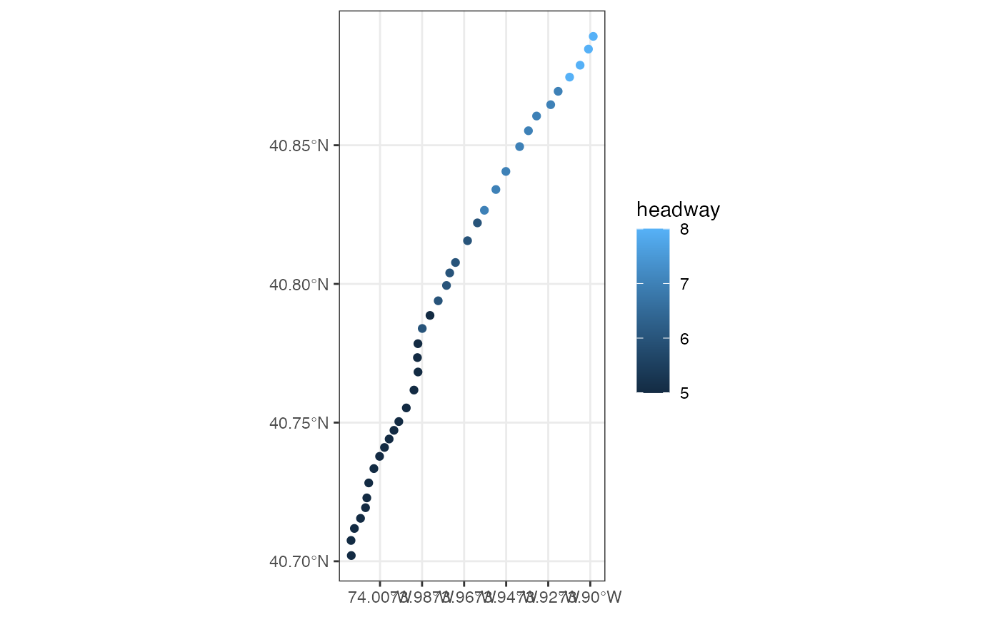
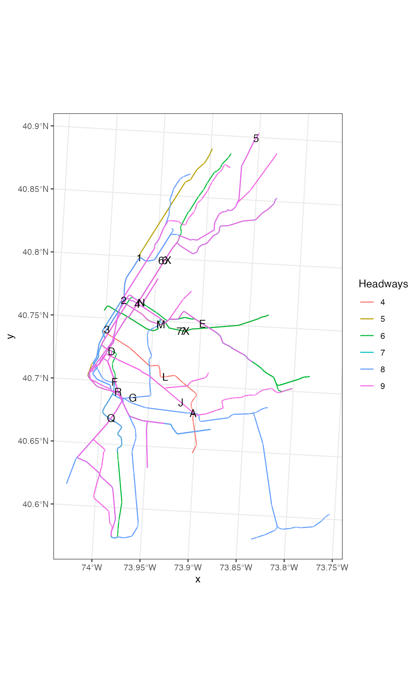
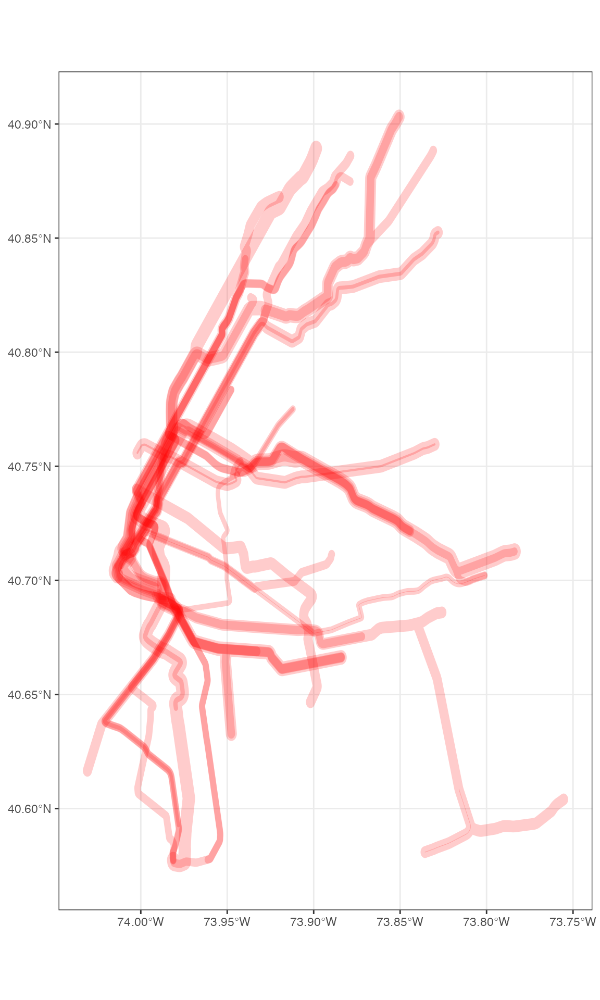
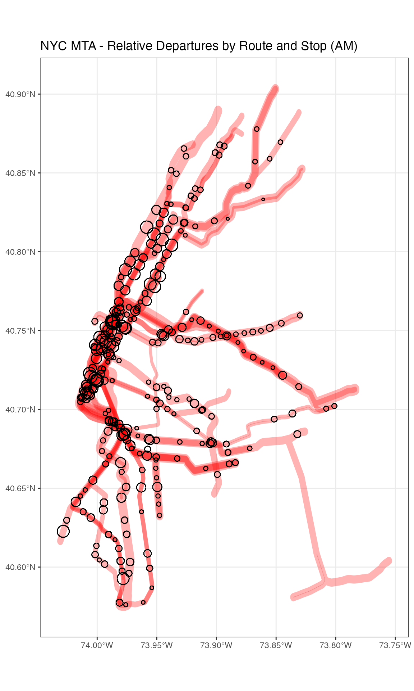

vignettes/frequency.Rmd
frequency.RmdThe focus of this vignette is on how to use R to make graphics about where and how often transit service operates based on schedule data published in the General Transit Feed Specification. We’ll focus on the New York City Metropolitan Transit Agency’s Subway schedule for this vignette, but you can easily apply it to thousands of other GTFS data sources. See the tidytransit introductory vignette for instructions on finding data for other cities and operators.
You’ll need to have tidytransit installed. Please see the install instructions for more details.
So, to review, we’re going to:
We’ll start by importing a snapshot of the NYC MTA’s subway schedule, which is included with the package when installed.
local_gtfs_path <- system.file("extdata", "google_transit_nyc_subway.zip", package = "tidytransit")
gtfs <- read_gtfs(local_gtfs_path)But note that you can also just uncomment the line below and import the data from the NYC MTA’s URL directly.
# gtfs <- read_gtfs("http://web.mta.info/developers/data/nyct/subway/google_transit.zip")GTFS feeds typically contain a schedule of all the schedules of service for a given system. Selecting a schedule of service in NYC allows us to focus on, for example, non-holiday weekday service, in the Fall of 2019. In some feeds, service selection can be more or less complicated than NYC. In any case, you’ll want to read the service patterns vignette included in this package in order to see how you can select the right service for your needs.
We use one of the functions described in that vignette to create a table on the gtfs feed that lets us filter by weekday/weekend service.
gtfs <- set_servicepattern(gtfs)After setting the service patterns, we can summarise each service by the number of trips and stops. We’ll also summarise the total distance covered by all trips in the service, and then check that against the total distance covered by the average route. First, we need to calculate the distance of each part of the route shapes.
shp1 <- shapes_as_sf(gtfs$shapes)
shp1 <- st_transform(shp1, crs=2263)
shp1$length <- st_length(shp1)
shp2 <- shp1 %>%
as.data.frame() %>%
select(shape_id,length,-geometry) Now we’re ready to roll the statistics up to services.
service_pattern_summary <- gtfs$trips %>%
left_join(gtfs$.$service_pattern, by="service_id") %>%
left_join(shp2, by="shape_id") %>%
left_join(gtfs$stop_times, by="trip_id") %>%
group_by(servicepattern_id) %>%
summarise(trips = n(),
routes = n_distinct(route_id),
total_distance_per_day_km = sum(as.numeric(length),
na.rm=TRUE)/1e3,
route_avg_distance_km = (sum(as.numeric(length),
na.rm=TRUE)/1e3)/(trips*routes),
stops=(n_distinct(stop_id)/2))
#> `summarise()` ungrouping output (override with `.groups` argument)We can also add the number of days that each service is in operation.
service_pattern_summary <- gtfs$.$date_servicepattern_table %>%
group_by(servicepattern_id) %>%
summarise(days_in_service = n()) %>%
left_join(service_pattern_summary, by="servicepattern_id")
#> `summarise()` ungrouping output (override with `.groups` argument)And then we’ll print the summary.
knitr::kable(service_pattern_summary)| servicepattern_id | days_in_service | trips | routes | total_distance_per_day_km | route_avg_distance_km | stops |
|---|---|---|---|---|---|---|
| s_128de43 | 15 | 2016 | 1 | 0 | 0.000000 | 21.0 |
| s_498c8ac | 75 | NA | NA | NA | NA | NA |
| s_a4c6b26 | 20 | 147987 | 22 | 14061874 | 4.319137 | 474.5 |
| s_c578d4a | 20 | 164132 | 22 | 15519287 | 4.297895 | 474.5 |
| s_d7d9701 | 75 | 2684 | 1 | 0 | 0.000000 | 21.0 |
| s_e25d6ca | 93 | 229909 | 28 | 22006017 | 3.418436 | 474.5 |
| s_f3bcc6f | 15 | 2016 | 1 | 0 | 0.000000 | 21.0 |
It seems that if we want to summarise the most common patterns of service in the NYC Metro system, we should use the s_e25d6ca service pattern, as it has the most days in service, the most trips, stops, and routes.
We’ll use that pattern below to pull out the Service ID’s that we need to use to identify trips in the GTFS feed for which we want to summarise service.
service_ids <- gtfs$.$service_pattern %>%
filter(servicepattern_id == 's_e25d6ca') %>%
pull(service_id)
head(service_ids) %>%
knitr::kable()| x |
|---|
| ASP18GEN-1087-Weekday-00 |
| ASP18GEN-2097-Weekday-00 |
| ASP18GEN-3086-Weekday-00 |
| ASP18GEN-4097-Weekday-00 |
| ASP18GEN-5106-Weekday-00 |
| ASP18GEN-6085-Weekday-00 |
So, what are these service_id codes? How they are put together varies from operator to operator. The important thing is that the service_id’s are also a field on the trips table, which describes all the trips taken in the system.
Lets see how many trips fall under each of these service_id’s on the trips table, and how they relate to routes.
gtfs$trips %>%
filter(service_id %in% service_ids) %>%
group_by(service_id, route_id) %>%
summarise(count = n()) %>%
head() %>%
knitr::kable()
#> `summarise()` regrouping output by 'service_id' (override with `.groups` argument)| service_id | route_id | count |
|---|---|---|
| ASP18GEN-1087-Weekday-00 | 1 | 462 |
| ASP18GEN-2097-Weekday-00 | 2 | 324 |
| ASP18GEN-3086-Weekday-00 | 3 | 306 |
| ASP18GEN-4097-Weekday-00 | 4 | 370 |
| ASP18GEN-5106-Weekday-00 | 5 | 309 |
| ASP18GEN-5106-Weekday-00 | 5X | 20 |
Given the one-to-one relationship between service-id’s and routes, we might conclude that the NYC Subway GTFS creates service_id’s for each route that a trip runs on. Some GTFS feeds are simpler: a single service_id might relate to ‘all vehicle trips running every weekdays’. Service patterns get us around complications like this by describing service in terms of exhaustive calendar dates, regardless of whether an operator may break out each route as a different service.
So, now that we’ve used service patterns to identify the set of service_id’s that refer to all weekday trips, we can summarize service between 6 am and 10 am for the NYC Subway system on weekdays.
am_freq <- get_stop_frequency(gtfs, start_hour = 6, end_hour = 10, service_ids = service_ids)| route_id | direction_id | stop_id | service_id | departures | headway |
|---|---|---|---|---|---|
| 1 | 0 | 101N | ASP18GEN-1087-Weekday-00 | 30 | 8 |
| 1 | 0 | 103N | ASP18GEN-1087-Weekday-00 | 30 | 8 |
| 1 | 0 | 104N | ASP18GEN-1087-Weekday-00 | 31 | 8 |
| 1 | 0 | 106N | ASP18GEN-1087-Weekday-00 | 31 | 8 |
| 1 | 0 | 107N | ASP18GEN-1087-Weekday-00 | 34 | 7 |
| 1 | 0 | 108N | ASP18GEN-1087-Weekday-00 | 35 | 7 |
This table includes columns for the id for a given stop, the route_id, our selected service_id’s, and the number of departures and the average headway for a given direction from 6 am to 10 am on weekdays.
The get_stop_frequency function simply counts the number of departures within the time frame to get departures per stop. Then, to get headways, it divides the number of minutes by the number of departures, and rounds to the nearest integer.
Lets have a look at the headways for the 1 train, which runs from the Bronx down to the Bottom of Manhattan.
First, we filter the am_freq data frame to just stops going in 1 direction on the 1 train, and then we join to the original stops table, which includes a more descriptive stop_name.
one_line_stops <- am_freq %>%
filter(route_id==1 & direction_id==0) %>%
left_join(gtfs$stops, by ="stop_id")As we can see, some stops seem to have higher headways than others, even when the train is running in the same direction. This may be counterintuitive, because we might expect the train to run through every stop the same amount of times for a given direction.
Lets inspect the stops at which headways are higher.
one_line_stops %>%
arrange(desc(headway)) %>%
select(stop_name, departures, headway) %>%
head() %>%
knitr::kable()| stop_name | departures | headway |
|---|---|---|
| Van Cortlandt Park - 242 St | 30 | 8 |
| 238 St | 30 | 8 |
| 231 St | 31 | 8 |
| Marble Hill - 225 St | 31 | 8 |
| 215 St | 34 | 7 |
| 207 St | 35 | 7 |
And those at which headways are lower:
one_line_stops %>%
arrange(desc(headway)) %>%
select(stop_name, departures, headway) %>%
tail() %>%
knitr::kable()| stop_name | departures | headway |
|---|---|---|
| Canal St | 47 | 5 |
| Franklin St | 47 | 5 |
| Chambers St | 47 | 5 |
| Cortlandt St | 48 | 5 |
| Rector St | 48 | 5 |
| South Ferry | 48 | 5 |
Here we can see that the 242-Van Cortland Stop, the last stop up North, in the Bronx, has noticeably higher headways (8 mins) at this time of day than the South Ferry Stop, which is at the south end of Manhattan.
Lets also plot the headways at these stops on a map to see how they are distributed across the city. First, we’ll use the stops_as_sf function, which converts the latitudes and longitudes on the stops table in the GTFS feed into simple features.
nyc_stops_sf <- stops_as_sf(gtfs$stops)Now we can join those stop coordinates to the 1 line’s calculated stop headways.
one_line_stops_sf <- nyc_stops_sf %>%
right_join(one_line_stops, by="stop_id") And then use ggplot’s geom_sf to plot the headways.

On the map too, we can see that there is some variation in stop headways. During certain times of the day, the 1 train skips stops north of a certain stop in manhattan, presumably in order to turn around and provide shorter headways to stops south of that stop.
Finally, we can easily summarise what the headways are like along the entire route now, by using r’s default summary function for the vector of headways.
summary(one_line_stops$headway)
#> Min. 1st Qu. Median Mean 3rd Qu. Max.
#> 5.000 5.000 5.500 5.921 7.000 8.000This is the same method that tidytransit uses to summarise headways along all routes in the system when we use the get_route_frequency function, which we’ll try next.
Now we’ll use the get_route_frequency function to summarise transit service by route, for the same time period.
am_route_freq <- get_route_frequency(gtfs, service_ids = service_ids, start_hour = 6, end_hour = 10)
head(am_route_freq) %>%
knitr::kable()| route_id | total_departures | median_headways | mean_headways | st_dev_headways | stop_count |
|---|---|---|---|---|---|
| 1 | 3414 | 5 | 5 | 0.89 | 76 |
| 2 | 3198 | 8 | 37 | 70.70 | 120 |
| 3 | 2017 | 8 | 8 | 0.94 | 68 |
| 4 | 2254 | 6 | 55 | 90.00 | 77 |
| 5 | 2183 | 9 | 35 | 68.77 | 92 |
| 6 | 2799 | 7 | 19 | 53.22 | 74 |
Since, under the hood, this table is a summary of stop frequencies along each route, it includes the same variables as a summary of the headways at each stop along the route, as well as a sum of all departures. Again, its important to note that this summary is based on the trips that happened within the time frame we specify. As with the stops, we can easily join this table to simple features and then plot it on a map. Note that here too we pass in the select service_id’s from above, as the route run by a vehicle also depends on the selected service.
# get_route_geometry needs a gtfs object that includes shapes as simple feature data frames
gtfs_sf <- gtfs_as_sf(gtfs)
routes_sf <- get_route_geometry(gtfs_sf, service_ids = service_ids)Then we join the geometries to the calculated frequencies:
routes_sf <- routes_sf %>%
inner_join(am_route_freq, by = 'route_id')And finally, lets plot the routes with median headways of less than 10 minutes in the morning.
# convert to an appropriate coordinate reference system
routes_sf_crs <- sf::st_transform(routes_sf, 26919)
routes_sf_crs %>%
filter(median_headways<10) %>%
ggplot() +
geom_sf(aes(colour=as.factor(median_headways))) +
labs(color = "Headways") +
geom_sf_text(aes(label=route_id)) +
theme_bw() 
Its clear that a number of the route lines overlap.
Still, we’d like to represent where and how frequently the subway runs in NYC in the morning. How can we do so given that, graphically, the route lines overlap?
One method might be change the units we are representing graphically. Thus far, we have used stops and routes as units. But GTFS data also come with a shapes table, which, in theory, should allow us to say what the frequency of vehicles passing through any given shape is, using similar methods. This kind of method is beyond the scope of this vignette.
Alternatively, regular ggplot users might expect the ggplot dodge function to allow us to move around these lines but, by design, thats not possible with geom_sf. One can see why: unlike a bar chart, the representations of route lines in geographic space on a map have a specific meaning.
So we’ll use a cartographic trick, scaling each line according to total departures and close to a number around .001 decimal degrees which is a about the length of a street, which will fit on the map well. One might call this a cartogram.
routes_sf_buffer <- st_buffer(routes_sf,
dist=routes_sf$total_departures/1e6)
#> Warning in st_buffer.sfc(st_geometry(x), dist, nQuadSegs, endCapStyle =
#> endCapStyle, : st_buffer does not correctly buffer longitude/latitude data
#> dist is assumed to be in decimal degrees (arc_degrees).Next, when we render the map, we’ll make sure to make the borders around each route transparent, and set the opacity for the fill of all the polygons high again.

Now we have a rough representation of the question we set out to answer: where and how frequently does transit service run in the AM in the NYC Subway. Note that in this graphic, the intensity of the red tells you how many overlapping trains run through the line and the thickness of the lines represents how many run along each line.
We can combine this with stops to get a sense of how central stops relate to routes.
nyc_stop_am_departures_main <- nyc_stops_sf %>% left_join(am_freq, by = "stop_id") %>%
filter(departures>50)First, we’ll leverage the common stop_name variable to group and count departures, in both directions, for all stops, filtering to out a number of smaller stops for more graphical clarity.
nyc_stops <- left_join(gtfs$stops,am_freq, by="stop_id")
stop_departures <- nyc_stops %>%
group_by(stop_name) %>%
transmute(total_departures=sum(departures, na.rm=TRUE))
nyc_stops1 <- right_join(nyc_stops_sf,
stop_departures, by="stop_name")
stop_departures <- nyc_stops1 %>%
filter(total_departures>100)Finally, we can plot both the route line counts and the stop departure counts on one map:
ggplot() +
geom_sf(data=routes_sf_buffer,colour=alpha("white",0),fill=alpha("red",0.3)) +
geom_sf(data=stop_departures, aes(size=total_departures), shape=1) +
labs(size = "Departures (Hundreds)") +
theme_bw() +
theme(legend.position="none") +
ggtitle("NYC MTA - Relative Departures by Route and Stop (AM)")